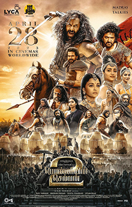

Ponniyin Selvan 2 Review: Chola Chola!

Rating:⭐⭐⭐⭐1/2
Ponniyin Selvan 2 is the continuation of Ponniyin Selvan 1, directed by Mani Ratnam. First of all, hats off for releasing the second part so quick.
I remember I rewatched the first film in theaters with a school club, and I was left with confusion and interest. So many clarities had been remedied
with the second part. The film was a lot better than the first part, since it had more storytelling. The casting doesn't need to be explained, the stellar
shots, the beautiful background score by AR Rahman, it was a whole treat. There were so many major teists that either let me get goosebumps or shocked. I really
didn't even know what to say after Aditha Karikalan's death. This left me wondering, should I have read the book first before watching the film?